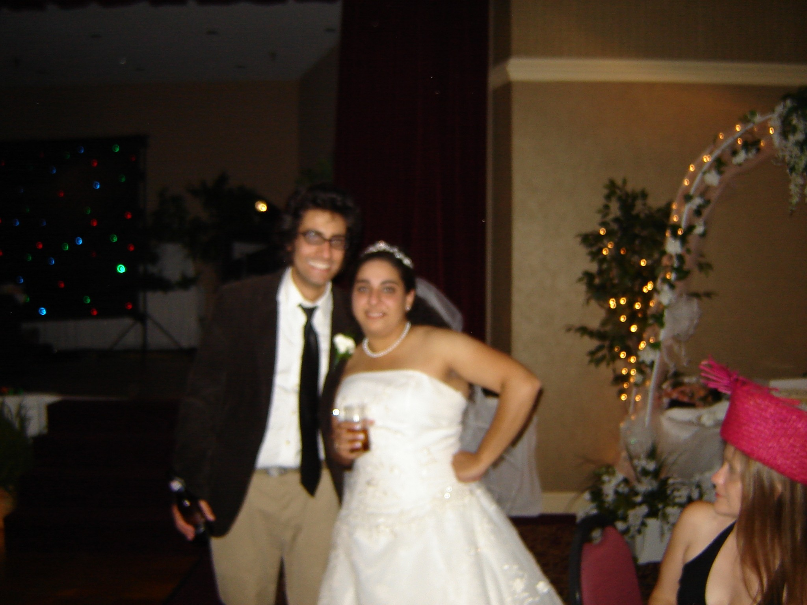

My younger sister (and only sibling) died suddenly and unexpectedly on July 2, 2024. I wrote this about 15 months later on what would have been her 46th birthday.
Happy Birthday, Mandi
October 15, 2025
Happy 46th birthday, Mandi! Forty-sixth birthdays are typically unremarkable, but this one hits hard for me because I lost you 15 months ago. That can't be right, it feels like yesterday! But it is.
On the bright side, the haze is lifting and things are coming into focus. My head is clearing up and I am remembering a little more every day.
This is a terrible picture but it's the only one I have of us at your wedding. Angel and I drove down from Athens that day. I was riding a high after successfully defending my dissertation the day before. Things were good. It felt like they would be that way forever.
When we got to the venue you were in the back, already wearing your wedding dress. You looked beautiful, and when you saw me you got emotional. “Semmy!” you said and your voice cracked. We embraced and I got emotional, too. I was so happy for everyone and about everything. Things were good. It felt like they would be that way forever.
I didn't remember how close we were, especially in our formative early twenties, until you were gone. Somehow we found ourselves housemates (you were a terrible one), drinking buddies (Jack’s Tavern downtown), metal fans (covered in fake blood against the stage at our first Gwar show), townies (smoking cigs at the Music Farm, Cumberland’s and The Warehouse), co-workers (members of National Car Rental’s inaugural “self-directed work team” lol), t-shirt sharers (our beloved long-sleeve Mythic t-shirt now hangs in my closet), classmates (the first cohort of Trident Tech’s Computer Animation certification), carpoolers to College of Charleston (while simultaneously pursuing bachelor’s degrees), dog co-parents (you better believe Ally was always kinda mine after I trained her), and – most of all – close friends. Things were good. It felt like they would be that way forever.
Then I lost you.
After you died I learned that you told your friends that I was your financial backup plan in the event you didn't save enough for retirement. That made me smile because you were my backup, too: my emotional backup. I counted on you to be here helping with family stuff, antagonizing all those jerks who hurt me, calling me out on my bullshit in the easier times, and carrying me forward through the hard times. But here we are.
I am still showing up for you, at least I'm trying. For Jesse. For Mom. For your kids. I can't take your place but I am striving to be the best brother-in-law, son and uncle there is. I hope you see that. I know you would be proud of me.
Speaking of your kids, I see more of you in them every day. Jasper is sarcastic and funny. Rayna is fiercely loyal and as easily annoyed by me as you were. But neither of them like heavy metal (what's up with that?!). I love them both like they are my own anyway.
And even though you're gone, you're still in my DNA. I'm a better person because you came into the world. I've become a better person since you left it. I share meaningful stories about you, our life together and our relationship all the time. I think most of my new friends and acquaintances think of me as “the guy whose sister died.” That's not a joke.
Grief is painful. Grief is paralyzing. Grief is a dark cloud that spends 15 months rewiring your brain until you are able to find words that can even come close to matching the weight of the moment. But most of all grief is the deepest, most real expression of love that I have ever experienced. And if my current experience is any indication, I love you more than anything else I have ever lost, more than these silly words can ever reflect. I only wish I understood that before you were gone so I could have told you.
But we all know how that would have gone. You would have told me to shut up and stop being lame. And everyone would laugh at me, as they probably should, for always being too touchy-feely, too overly emotional, and taking things too seriously.
Now that I think about it, maybe you knew that you would not be able to be here for me. A few months before you died you gave me the last Christmas gift I will ever get from you. It’s a kitschy, wooden knickknack engraved with timeless wisdom, seemingly written just for me, to help guide me through life’s impending storms in the way only you would.
“Put on some Death Metal and handle it,” it says. Indeed, I will.
I miss you. The world is a worse place without you. And it feels like it will be that way forever.
